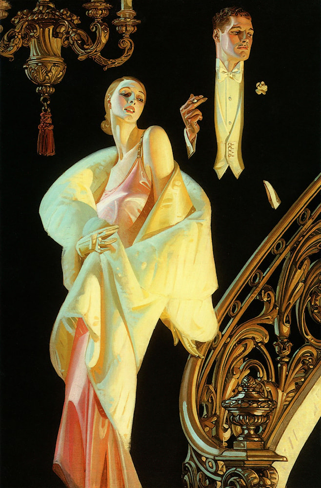

J.C. Leyendecker
A legendary Draftsman:
Joseph Christian Leyendecker, born in Germany in the year 1874 before quickly moving to
Chicago with his family in 1882.
He began to study art and illustration there before moving to Paris to further hone his
skills in the 1890s.
In 1902 Leyendecker relocated to New York to start his career as a commercial artist.
Leyendecker's work, starting with the "Arrow Collar Man" would go on to redefine the
aesthetics of men's fashion and beauty for the next few decades.
A pioneer of the Art Deco movement, Leyendecker's signature style included the usage of
bold lines, strong shape design, and visible brushwork that added a distinct texture to
his images.
But most of all, Leyendecker was highly prised for his ability to tell entire stories
through single image illustrations alone, a factor that made him highly sought after
in advertising especially.